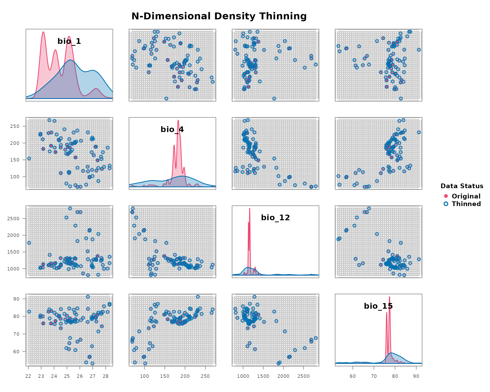
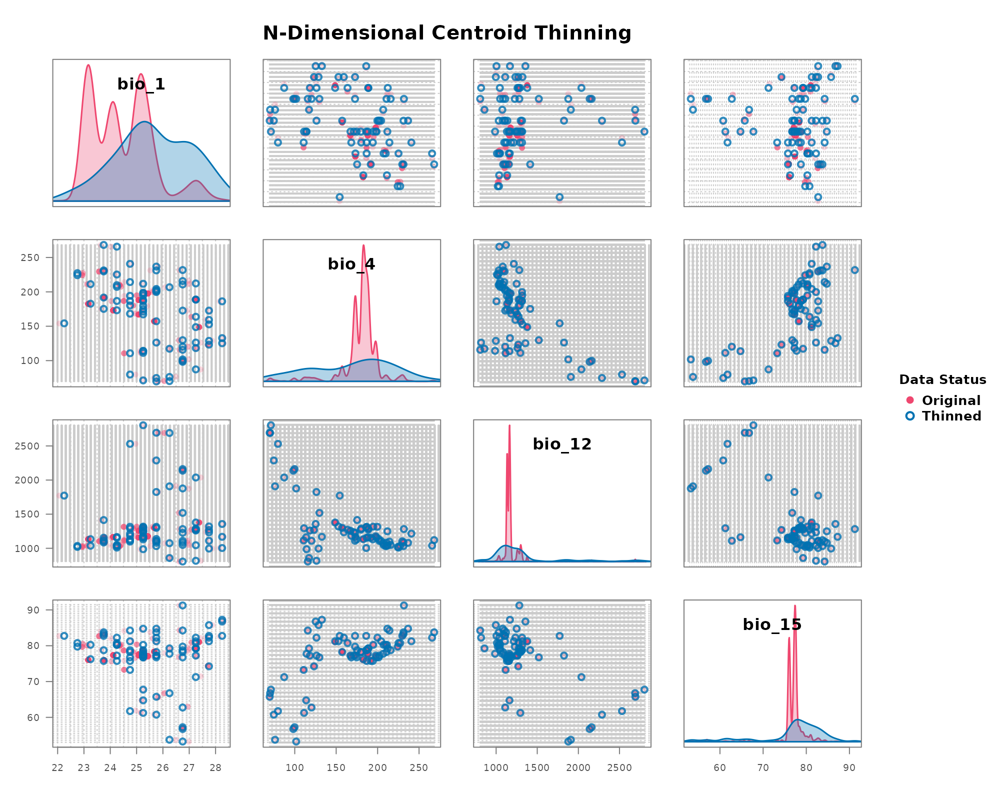
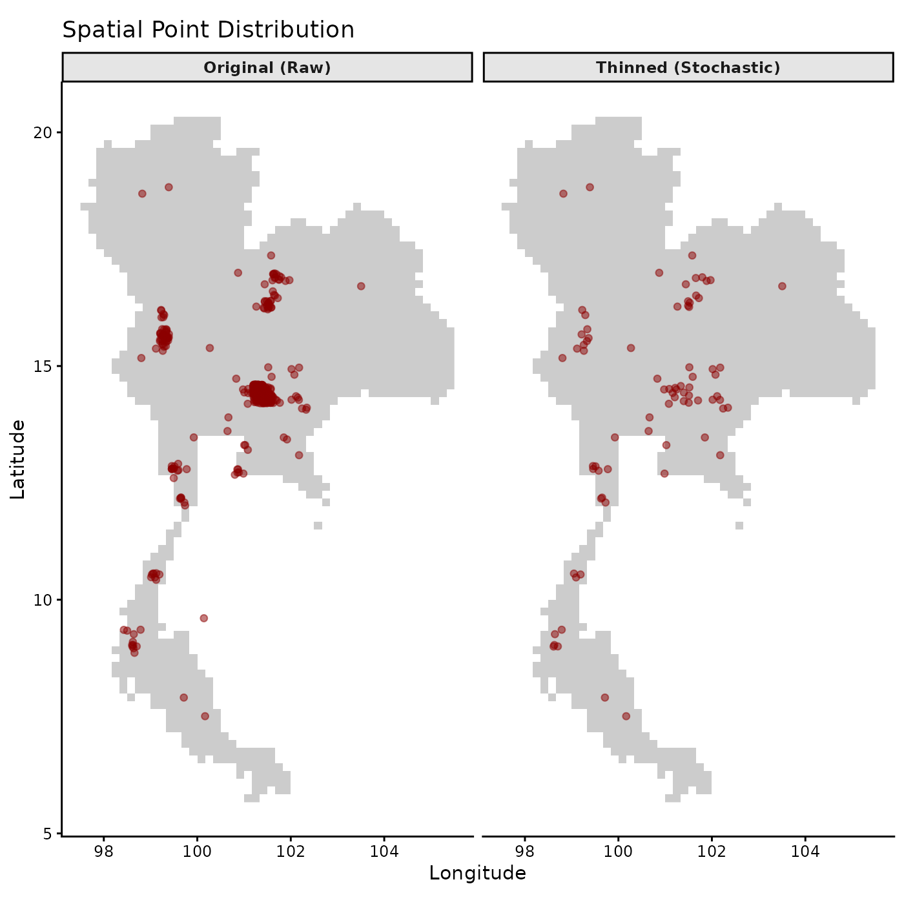

Load the package
Step 3: Objective Grid Resolution using Nearest Neighbors
The most critical parameter in environmental gridding is the
grid_resolution. Instead of guessing this value, we can
derive it objectively from the data by analyzing the density of points
in environmental space.
The find_env_resolution() function uses a geometric
“elbow” method based on nearest-neighbor distances. This identifies the
exact distance where dense artificial clustering transitions into
natural data spacing, eliminating the need for arbitrary quantiles.
data(origin_dat_prepared, package = "bean")
# Find the objective resolution using the elbow method
resolution_results <- find_env_resolution(
data = origin_dat_prepared,
env_vars = c("bio_1", "bio_4", "bio_12", "bio_15")
)
#> Calculating nearest neighbor environmental distances and detecting elbows...
plot(resolution_results)
# Let's use this objective resolution in the next step
grid_res <- resolution_results$suggested_resolution
grid_res
#> bio_1 bio_4 bio_12 bio_15
#> 0.002405167 0.098876953 1.000000000 0.034934998Step 4: Apply Thinning
Now that we have an objective, data-driven
grid_resolution, we can apply the thinning. We offer two
methods: stochastic and deterministic.
Method A: Stochastic Thinning with thin_env_nd
This method randomly samples exactly one point from each occupied grid cell, enforcing strict presence-only logic within the environmental hypercube.
# Apply the stochastic thinning (using a seed for reproducibility)
thinned_stochastic <- thin_env_nd(
data = origin_dat_prepared,
env_vars = c("bio_1","bio_4", "bio_12", "bio_15"),
grid_resolution = grid_res
)
# Print the summary of the thinning results
thinned_stochastic
#> --- Bean Stochastic Thinning Results ---
#>
#> Thinned 1024 original points to 78 points.
#> This represents a retention of 7.6% of the data.
#>
#> --------------------------------------
head(thinned_stochastic$thinned_data)
#> species y x bio_1 bio_12 bio_15 bio_4
#> 945 Rusa unicolor 14.45169 101.29557 24.11074 1166 77.36796 173.1696
#> 807 Rusa unicolor 16.45394 101.72157 24.19963 1010 80.99183 225.2455
#> 968 Rusa unicolor 16.25104 101.57840 24.35942 1031 80.01744 209.8779
#> 919 Rusa unicolor 16.29003 101.49113 24.40832 1048 80.30025 207.4802
#> 812 Rusa unicolor 15.67431 99.28283 24.51126 1315 78.66610 186.7147
#> 484 Rusa unicolor 12.79893 99.45413 24.52396 1115 73.28954 110.6435Method B: Deterministic Thinning with
thin_env_center
This method provides a simpler, non-random alternative. It returns a single new point at the exact center of every occupied grid cell, regardless of how many original points fell within it.
# Apply the deterministic thinning
thinned_deterministic <- thin_env_center(
data = origin_dat_prepared,
env_vars = c("bio_1","bio_4", "bio_12", "bio_15"),
grid_resolution = c(0.5,0.5,0.5,0.5)
)
# Print the summary of the thinning results
thinned_deterministic
#> --- Bean Deterministic Thinning Results ---
#>
#> Thinned 1024 original points to 78 unique grid cell centers.
#> This represents a retention of 7.6% of the data.
#>
#> --------------------------------------
head(thinned_deterministic$thinned_points)
#> bio_1 bio_4 bio_12 bio_15
#> 1 23.75 175.25 1414.25 78.75
#> 2 24.75 180.25 1289.25 78.25
#> 3 24.25 173.25 1166.25 77.25
#> 4 25.25 186.25 1309.25 78.75
#> 5 23.25 182.75 1134.25 76.25
#> 6 27.75 123.25 1269.25 74.25Step 5: Visualize the Thinning Results
The plot_bean() function provides a powerful way to
visualize the effect of thinning by overlaying the thinned points on the
original data within the environmental grid.
data(occ_data_raw, package = "bean")
data(origin_dat_prepared, package = "bean")
data(thinned_stochastic, package = "bean")
data(thinned_deterministic, package = "bean")
# Visualize the stochastic thinning results
plot_bean(
original_data = origin_dat_prepared,
thinned_object = thinned_stochastic,
env_vars = c("bio_1","bio_4", "bio_12", "bio_15")
)
# Visualize the deterministic thinning results
plot_bean(
original_data = origin_dat_prepared,
thinned_object = thinned_deterministic,
env_vars = c("bio_1","bio_4", "bio_12", "bio_15")
)
# Visualize the spatial distribution of the occurrence and thinned points
# Load the environmental raster layers
thai_env_file <- system.file("extdata", "thai_env.tif", package = "bean")
env <- terra::rast(c(thai_env_file))
# Combine the data and add a label for the partition
plot_data <- dplyr::bind_rows(
occ_data_raw %>% dplyr::mutate(Data_Type = "Original (Raw)"),
thinned_stochastic$thinned_data %>% dplyr::mutate(Data_Type = "Thinned (Stochastic)")
)
# Lock the order so "Original" is always on the left partition
plot_data$Data_Type <- factor(plot_data$Data_Type, levels = c("Original (Raw)", "Thinned (Stochastic)"))
# Plot with a partition (facet_wrap)
ggplot(plot_data, aes(x = x, y = y)) +
geom_raster(data = as.data.frame(env[[1]], xy = TRUE), aes(x = x, y = y), fill = "gray80") +
geom_point(alpha = 0.5, color = "darkred") +
coord_fixed() +
facet_wrap(~Data_Type) + # <--- This creates the partition line!
labs(title = "Spatial Point Distribution",
x = "Longitude", y = "Latitude") +
theme_classic() +
theme(strip.background = element_rect(fill = "grey90"),
strip.text = element_text(face = "bold"))